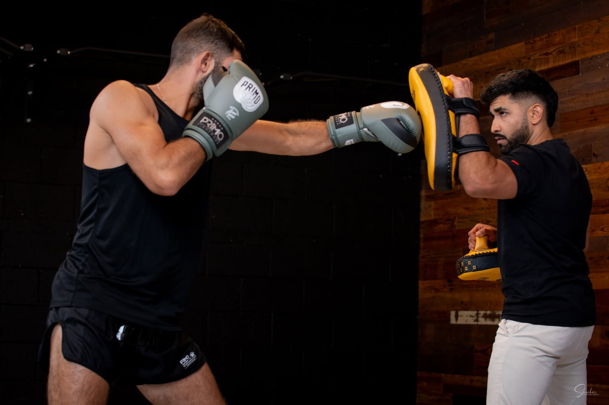

שיקום מקצועי ומותאם אישית
אחרי פציעות ספורט, ניתוחים, כאבים כרוניים — או רצון לחזור לתפקוד מלא. כל תוכנית נבנית לפי אבחון קליני מלא ומעודכנת מפגש אחרי מפגש.
הרבה שואלים אותי — ״אביחי, זה אימון אגרוף תאילנדי או פיזיותרפיה?״
התשובה היא: זה השילוב שחיכיתם לו.
TheraFist היא שיטת שיקום שפיתחתי מתוך שני העולמות שאני חי בהם: הפיזיותרפיה הקלינית — והזירה. במקום טיפול פסיבי על מיטה, אנחנו עובדים בתנועה: מכות מדויקות על כפפות, עבודת רגליים, שינויי קצב ושליטה בגוף — כשכל תרגיל נבחר מסיבה קלינית ברורה ומותאם בדיוק למצב שלכם.
״השיקום האמיתי קורה בתנועה.״
זה לא ״טיפול ספא״. זה שיקום אקטיבי, משמעותי ומקצועי — כזה שמחזיר לגוף ביטחון, שליטה ותנועה, ולנפש את תחושת הלוחם.

אחרי פציעות ספורט, ניתוחים, כאבים כרוניים — או רצון לחזור לתפקוד מלא. כל תוכנית נבנית לפי אבחון קליני מלא ומעודכנת מפגש אחרי מפגש.
מכה על כפפה היא לא רק מכה — היא עבודה על טווח תנועה, כוח, תזמון וביטחון. אלמנטים מהזירה הופכים לכלי טיפולי מדויק.
עבודה שיטתית על היסודות שמחזיקים כל תנועה — שליטה בגוף, יציבה נכונה וביטחון בכל צעד.
הכול בקצב של המטופל, במרחב בטוח ומקצועי, בליווי צמוד של פיזיותרפיסט מוסמך. בלי לחץ — עם דרישה.
שיחה קצרה בוואטסאפ או בטלפון — נבין מה המצב, מה כואב ומה המטרה.
בדיקה פיזיקלית מקיפה: טווחי תנועה, כוח, יציבות ותפקוד — ובניית תוכנית אישית.
מפגשים טיפוליים בשיטת TheraFist — מדורגים, מדויקים ומותאמים לקצב שלכם.
חזרה לתפקוד, לספורט ולביטחון — עם כלים להמשיך להתחזק גם אחרי הטיפול.
שלחו הודעה — נקבע שיחת היכרות קצרה ונראה יחד אם TheraFist מתאימה לכם.